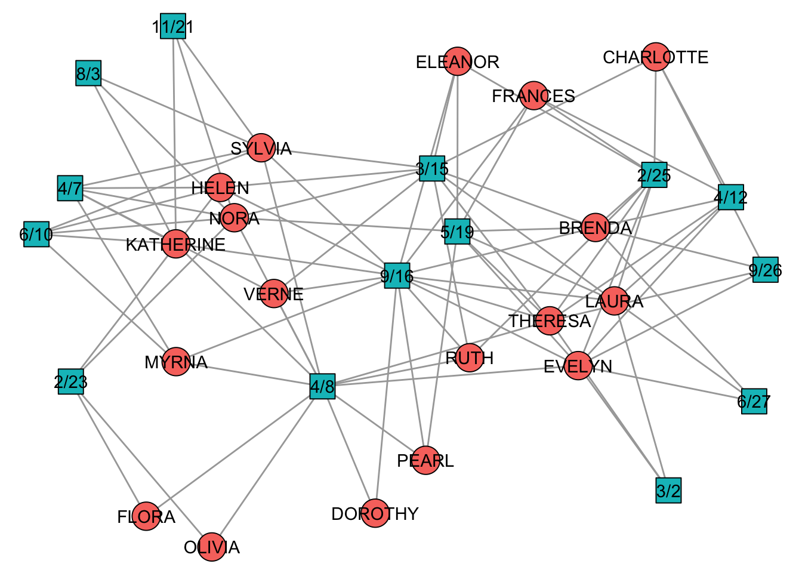
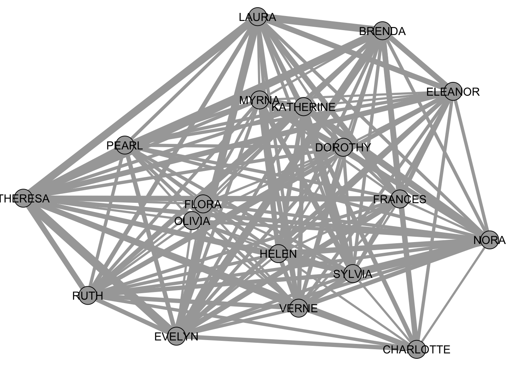

library(igraph)
library(backbone)
library(networkdata)7 Two-Mode Networks
A two-mode network is a network that consists of two disjoint sets of nodes (like people and events). Ties connect the two sets, e. g. participation of people in events. There exists a great variet of two mode networks. The most often encountered ones are
- Affiliation networks (Membership in institutions/clubs)
- Voting/Sponsorship networks (politicians and bills)
- Citation network (authors and papers)
- Co-Authorship networks (authors and papers)
Below we will discuss some methods via the famous “southern women” dataset consisting of 18 women who attended a series of 14 events.
data("southern_women")
southern_womenIGRAPH 1074643 UN-B 32 89 --
+ attr: type (v/l), name (v/c)
+ edges from 1074643 (vertex names):
[1] EVELYN --6/27 EVELYN --3/2 EVELYN --4/12 EVELYN --9/26
[5] EVELYN --2/25 EVELYN --5/19 EVELYN --9/16 EVELYN --4/8
[9] LAURA --6/27 LAURA --3/2 LAURA --4/12 LAURA --2/25
[13] LAURA --5/19 LAURA --3/15 LAURA --9/16 THERESA --3/2
[17] THERESA --4/12 THERESA --9/26 THERESA --2/25 THERESA --5/19
[21] THERESA --3/15 THERESA --9/16 THERESA --4/8 BRENDA --6/27
[25] BRENDA --4/12 BRENDA --9/26 BRENDA --2/25 BRENDA --5/19
[29] BRENDA --3/15 BRENDA --9/16 CHARLOTTE--4/12 CHARLOTTE--9/26
+ ... omitted several edgestable(V(southern_women)$type)
FALSE TRUE
18 14 
The adjacency matrix of a two mode network is also referred to as an incidence matrix and can be obtained via as biadjacency_matrix().
A <- as_biadjacency_matrix(southern_women)
A 6/27 3/2 4/12 9/26 2/25 5/19 3/15 9/16 4/8 6/10 2/23 4/7 11/21 8/3
EVELYN 1 1 1 1 1 1 0 1 1 0 0 0 0 0
LAURA 1 1 1 0 1 1 1 1 0 0 0 0 0 0
THERESA 0 1 1 1 1 1 1 1 1 0 0 0 0 0
BRENDA 1 0 1 1 1 1 1 1 0 0 0 0 0 0
CHARLOTTE 0 0 1 1 1 0 1 0 0 0 0 0 0 0
FRANCES 0 0 1 0 1 1 0 1 0 0 0 0 0 0
ELEANOR 0 0 0 0 1 1 1 1 0 0 0 0 0 0
PEARL 0 0 0 0 0 1 0 1 1 0 0 0 0 0
RUTH 0 0 0 0 1 0 1 1 1 0 0 0 0 0
VERNE 0 0 0 0 0 0 1 1 1 0 0 1 0 0
MYRNA 0 0 0 0 0 0 0 1 1 1 0 1 0 0
KATHERINE 0 0 0 0 0 0 0 1 1 1 0 1 1 1
SYLVIA 0 0 0 0 0 0 1 1 1 1 0 1 1 1
NORA 0 0 0 0 0 1 1 0 1 1 1 1 1 1
HELEN 0 0 0 0 0 0 1 1 0 1 1 1 0 0
DOROTHY 0 0 0 0 0 0 0 1 1 0 0 0 0 0
OLIVIA 0 0 0 0 0 0 0 0 1 0 1 0 0 0
FLORA 0 0 0 0 0 0 0 0 1 0 1 0 0 0The tnet (link) and bipartite (link) offer some methods to analyse two mode networks directly, by adapting tools for standard (one-mode) networks (like the ones described in previous sections).
7.1 Bipartite Projections
Besides analyzing a two-mode network as-is, there is also the possibility to project it to one mode. Mathematically, this is done by calculating \(AA^T\) or \(A^TA\), depending which mode we project on. As an example, consider the southern women dataset again.
B <- A%*%t(A)
B EVELYN LAURA THERESA BRENDA CHARLOTTE FRANCES ELEANOR PEARL RUTH
EVELYN 8 6 7 6 3 4 3 3 3
LAURA 6 7 6 6 3 4 4 2 3
THERESA 7 6 8 6 4 4 4 3 4
BRENDA 6 6 6 7 4 4 4 2 3
CHARLOTTE 3 3 4 4 4 2 2 0 2
FRANCES 4 4 4 4 2 4 3 2 2
ELEANOR 3 4 4 4 2 3 4 2 3
PEARL 3 2 3 2 0 2 2 3 2
RUTH 3 3 4 3 2 2 3 2 4
VERNE 2 2 3 2 1 1 2 2 3
MYRNA 2 1 2 1 0 1 1 2 2
KATHERINE 2 1 2 1 0 1 1 2 2
SYLVIA 2 2 3 2 1 1 2 2 3
NORA 2 2 3 2 1 1 2 2 2
HELEN 1 2 2 2 1 1 2 1 2
DOROTHY 2 1 2 1 0 1 1 2 2
OLIVIA 1 0 1 0 0 0 0 1 1
FLORA 1 0 1 0 0 0 0 1 1
VERNE MYRNA KATHERINE SYLVIA NORA HELEN DOROTHY OLIVIA FLORA
EVELYN 2 2 2 2 2 1 2 1 1
LAURA 2 1 1 2 2 2 1 0 0
THERESA 3 2 2 3 3 2 2 1 1
BRENDA 2 1 1 2 2 2 1 0 0
CHARLOTTE 1 0 0 1 1 1 0 0 0
FRANCES 1 1 1 1 1 1 1 0 0
ELEANOR 2 1 1 2 2 2 1 0 0
PEARL 2 2 2 2 2 1 2 1 1
RUTH 3 2 2 3 2 2 2 1 1
VERNE 4 3 3 4 3 3 2 1 1
MYRNA 3 4 4 4 3 3 2 1 1
KATHERINE 3 4 6 6 5 3 2 1 1
SYLVIA 4 4 6 7 6 4 2 1 1
NORA 3 3 5 6 8 4 1 2 2
HELEN 3 3 3 4 4 5 1 1 1
DOROTHY 2 2 2 2 1 1 2 1 1
OLIVIA 1 1 1 1 2 1 1 2 2
FLORA 1 1 1 1 2 1 1 2 2This matrix can now be interpreted as a weighted network among the 18 women. Each entry corresponds to the number of times two women went to the same event.
bipartite_projection(southern_women)$proj1
IGRAPH b2b3d19 UNW- 18 139 --
+ attr: name (v/c), weight (e/n)
+ edges from b2b3d19 (vertex names):
[1] EVELYN --LAURA EVELYN --BRENDA EVELYN --THERESA EVELYN --CHARLOTTE
[5] EVELYN --FRANCES EVELYN --ELEANOR EVELYN --RUTH EVELYN --PEARL
[9] EVELYN --NORA EVELYN --VERNE EVELYN --MYRNA EVELYN --KATHERINE
[13] EVELYN --SYLVIA EVELYN --HELEN EVELYN --DOROTHY EVELYN --OLIVIA
[17] EVELYN --FLORA LAURA --BRENDA LAURA --THERESA LAURA --CHARLOTTE
[21] LAURA --FRANCES LAURA --ELEANOR LAURA --RUTH LAURA --PEARL
[25] LAURA --NORA LAURA --VERNE LAURA --SYLVIA LAURA --HELEN
[29] LAURA --MYRNA LAURA --KATHERINE LAURA --DOROTHY THERESA--BRENDA
+ ... omitted several edges
$proj2
IGRAPH 8f61e42 UNW- 14 66 --
+ attr: name (v/c), weight (e/n)
+ edges from 8f61e42 (vertex names):
[1] 6/27--3/2 6/27--4/12 6/27--9/26 6/27--2/25 6/27--5/19 6/27--9/16
[7] 6/27--4/8 6/27--3/15 3/2 --4/12 3/2 --9/26 3/2 --2/25 3/2 --5/19
[13] 3/2 --9/16 3/2 --4/8 3/2 --3/15 4/12--9/26 4/12--2/25 4/12--5/19
[19] 4/12--9/16 4/12--4/8 4/12--3/15 9/26--2/25 9/26--5/19 9/26--9/16
[25] 9/26--4/8 9/26--3/15 2/25--5/19 2/25--9/16 2/25--4/8 2/25--3/15
[31] 5/19--9/16 5/19--4/8 5/19--3/15 5/19--6/10 5/19--2/23 5/19--4/7
[37] 5/19--11/21 5/19--8/3 3/15--9/16 3/15--4/8 3/15--4/7 3/15--6/10
[43] 3/15--11/21 3/15--8/3 3/15--2/23 9/16--4/8 9/16--4/7 9/16--6/10
+ ... omitted several edges
As you can see, the network has become very dense. A very common step is now to binarize the network. In doing so, we basically turn the network into a simple undirected one-mode network. This makes all methods we described in the first few sections applicable to the network (at least in theory).
The simplest way of binarizing a weighted projection is to define a global threshold and remove a tie if its weight is below the global threshold. This is simple but come with many undesirable structural problems. More sophisticated tools work with statistical models in the background which determine if an edge weight differs enough from the expected value. If so, the edge is kept in the binary “backbone” of the network.
All possible backbone extraction methods are implemented in the backbone package (link). An introduction to the package can be found on arxiv.